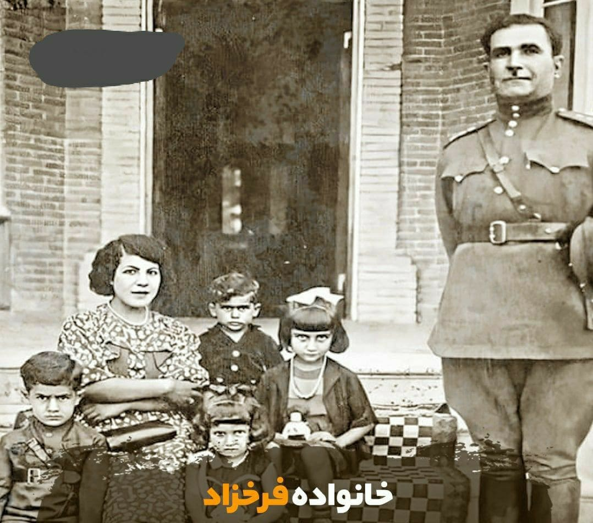
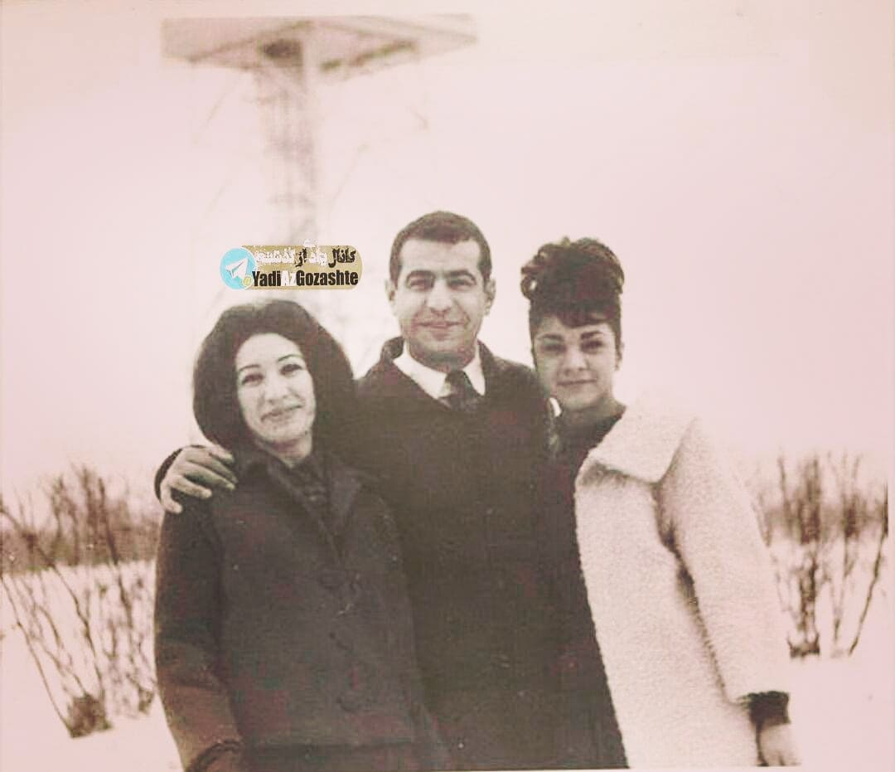
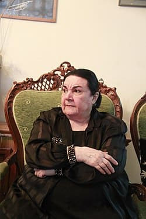

خانواده و روابط
پدر:محمد فرخزاد

مادر:توران وزیری تبار
همسر:پرویز شاپور

فرزند:کامیار شاپور
برادر:فریدون فرخزاد

خواهر:گلوریا فرخزاد

فروغ در 8 دی 1313 در امیریه تهران متولد شد
در 16 سالگی با پرویز شاپور ازدواج کرد
تنها فرزندش کامیار شاپور متولد شد
مجموعه شعر (اسیر) را در 18 سالگی منتشر کرد
با ابراهیم گلستان آشنا شد و همکاری با سازمان فیلم گلستان را آغاز کرد
فیلم مستند خانه سیاه است را درباره آسایشگاه جذامیان ساخت
شاهکارش(تولدی دیگر) را منتشر کرد که نقطه عطف شعر معاصر فارسی شد
در 24 بهمن 1345 در 32 سالگی بر اثر سانحه رانندگی در گذشت
...در حال بارگذاری آثار
پدر:محمد فرخزاد

مادر:توران وزیری تبار
همسر:پرویز شاپور
فرزند:کامیار شاپور
برادر:فریدون فرخزاد

خواهر:گلوریا فرخزاد

فروغ تا کلاس سوم دبیرستان در دبیرستان خسروخاور تحصیل کرد و سپس به هنرستان بانوان رفت و در رشته خیاطی فارغ التحصیل شد
علایق هنری:نقاشی,سینما,تئاتر,موسیقی کلاسیک
سفرها:ایتالیا,آلمان,انگلستان